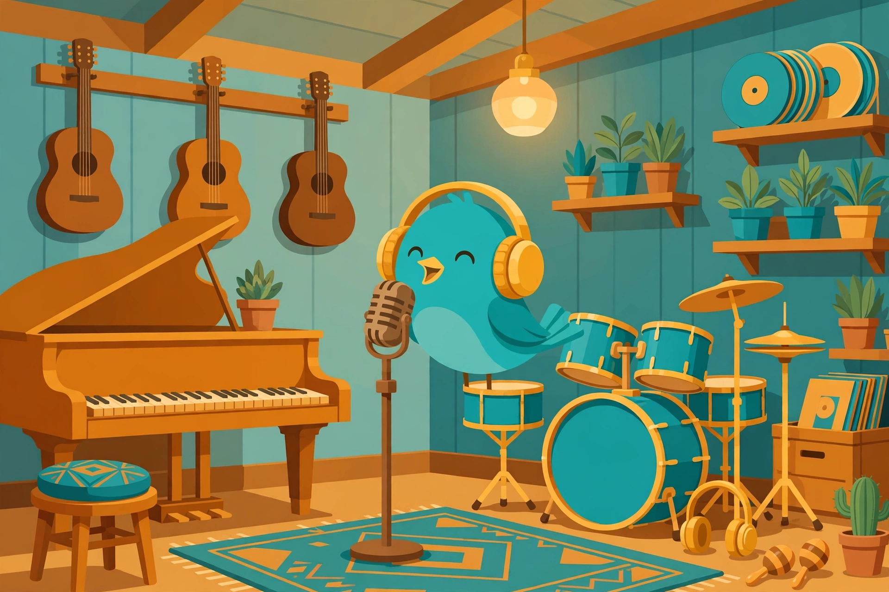

Welcome to the Songbird Studio — guitars on the wall, a piano in the corner, and a songbird at the microphone.
Meet Melody the Songbird, the mascot of this world.
Signature Music Studio is the full music-making studio: a sound library, studio equipment with real patch guides, a beat maker, an auto song writer, a vocal studio, backup singers, vocal cleanup, and CD making. The archive index holds 108,050 records.
Two working tools, right here on the page. Each one says what it does and what it cannot do. Neither tool reaches the live web, and neither one needs a key.
Enter a tempo in beats per minute to get the seconds in one beat and in one four-beat bar. Amber Harbor runs at 101 beats per minute.
Tempo (BPM):
Search the 500-title sample on this page by song title. Shows up to 10 matches.
Search:
Designs, printables, and demos — free, downloadable, usable on the page. Every product is labeled Signature or Fun. Nothing here is for sale.
A printable songbook with the first twelve archive songs: title, genre, mood, tempo, key, chords, and full lyrics.
Making: print the printable file, fold the pages along the marked lines, and staple the spine.
A poster of the chord shapes used by the first twelve archive songs, with the tempo and key of each song.
Making: print the printable file and pin it up by the piano.
A set of beat cards for tapping along: each card names a tempo and a mood, drawn in the Songbird Studio style.
Making: print the printable file on card, cut out the cards, and tap the beat on the table.
Download all product lines as a printable (text)
Melody the Songbird once sang a whole songbook at 101 beats a minute and the piano asked for an encore. The encore was also 101 beats a minute. (Fun — a made-up tale, not a record.)